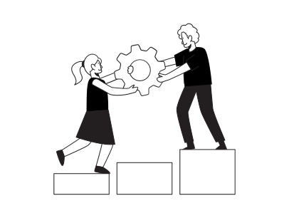

Valores
- Innovación: Gizmoxa valora la innovación y la creatividad en el desarrollo de soluciones tecnológicas avanzadas.
- Excelencia: Gizmoxa valora la excelencia en la calidad de sus productos y servicios, y se esfuerza por superar las expectativas de sus clientes.
- Responsabilidad social: Gizmoxa valora la responsabilidad social y el compromiso con la comunidad.
- Colaboración: Gizmoxa valora la colaboración y la cooperación en su equipo de trabajo, así como con sus clientes y socios.
- 0rientación al cliente: Gizmoxa valora la orientación al cliente y se esfuerza por entender las necesidades y los desafíos de sus clientes para ofrecer soluciones personalizadas y efectivas.

Objetivos
- Innovación continua: Gizmoxa se esfuerza por mantenerse a la vanguardia de la tecnología y mejorar constantemente sus soluciones de conectividad y automatización industrial para satisfacer las necesidades cambiantes del mercado y mantener una ventaja competitiva.
- Satisfacción del cliente: Gizmoxa se esfuerza por comprender las necesidades y expectativas de sus clientes y ofrecer soluciones personalizadas y un servicio excepcional para garantizar su satisfacción y fidelidad a largo plazo.
- Rentabilidad: Gizmoxa busca maximizar su rentabilidad al mejorar continuamente la eficiencia operativa, reducir los costos y aumentar las ventas y la participación de mercado.
- Responsabilidad social y ambiental: Gizmoxa está comprometida con la sostenibilidad y la responsabilidad social, y busca minimizar su impacto ambiental y apoyar a las comunidades locales en las que opera.
- Crecimiento global: Gizmoxa busca expandirse a nuevos mercados y aumentar su presencia global para satisfacer la creciente demanda de soluciones de conectividad y automatización industrial en todo el mundo.